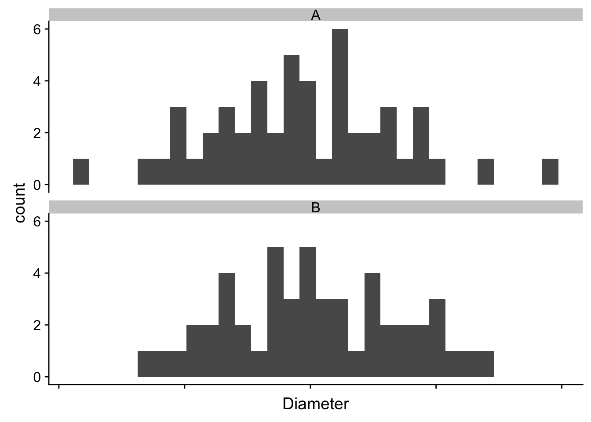
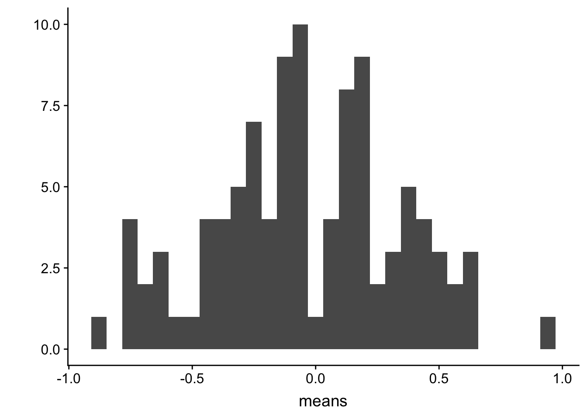

Chapter 2 Means, Standard Deviations and Standard Error
Uncertainty is the stuff of science. A major goal of statistics is measuring uncertainty. What do we mean by uncertainty? Uncertainty is the error in estimating a parameter, such as the mean of a sample, or the difference in means between two experimental treatments, or the predicted response given a certain change in conditions. Uncertainty is measured with a variance or its square root, which is a standard deviation. The standard deviation of a statistic is also (and more commonly) called a standard error.
2.1 First explorations – plots of sample variability
In any introductory statistics class, students are introduced to the terms “standard deviation” and “standard error.” These terms are absolutely fundamental to statistics – they are the start of everything else. Yet, many biology professors confuse these terms and certainly, introductory statistics do too.
When a research biologist uses the term “standard deviation,” they are probably referring to the sample standard deviation which is a measure of the variability of a sample. When a research biologists uses the term “standard error,” they are probably referring to the standard error of a mean, but it could be the standard error of another statistics, such as a regression slope. Let’s explore these
2.1.1 Scale is critical
The fake data in the plots below are diameters of two different types of Call (“A” and “B”). Which cell type is more variable?
## `stat_bin()` using `bins = 30`. Pick better value with `binwidth`.
2.2 Using Google Sheets to generate fake data to explore uncertainty
In statistics we are interested in estimated parameters of a population using measures from a sample. The goal in this section is to use Google Sheets (or Microsoft Excel) to use fake data to discover the behavior of sampling and to gain some intuition about uncertainty using standard errors.
2.2.1 Steps
- Open Google Sheets
- In cell A1 type “Mu”. Mu is the greek letter \(\mu\) and is very common notation for the poplation value (the TRUE value!) of the mean of some hypothetical measure. In cell B1, insert some number as the value of \(\mu\). Any number! It can be negative or positive.
- In cell A2 type “Sigma”. Sigma is the greek letter \(\sigma\). \(\sigma^2\) is very common (universal!) notation for the population (TRUE) variance of some measure or parameter. Notice that the true (population) values of the mean and variance are greek letters. This is pretty standard in statistics. In cell B2, insert some positive number (standard deviations are the positive square roots of the variance).
- In cell A8 type the number 1
- In cell A9 insert the equation “=A8 + 1”. What is this equation doing? It is adding the number 1 to to the value in the cell above, so the resulting value should be 2.
- In Cell B8, insert the equation “=normsinv(rand())*$B$2 + $B$1“. The first part of the equation creates a random normal variable with mean 0 and standard deviation 1. multiplication and addition transform this to a random normal variable with mean \(\mu\) and standard deviation \(\sigma\) (the values you set in cells B1 and B2).
- copy cell B8 and paste into cell B9. Now Higlight cells A9:B9 and copy the equations down to row 107. You now have 100 random variables sampled from a infinite population with mean \(\mu\) and standard deviation \(\sigma\).
- In cell A4 write “mean 10”. In cell B4 insert the equation “=average(B8:B17)”. The resulting value is the *sample mean} of the first 10 random variables you created. Is the mean close to \(\mu\)?
- In cell A5 write “sd 10”. In cell B5 insert the equation “stdev(B8:B17)”. The result is the sample standard deviation of the first 10 random variables. Is this close to \(\sigma\)?
- In cell A6 write “mean 100”. In cell B6 insert the equation “=average(B8:B107)”. The resulting value is the sample mean of the all 100 random variables you created. Is this mean closer to \(\mu\) than mean 10?
- In cell A7 write “sd 100”. In cell B7 insert the equation “=stdev(B8:B107)”. The resulting value is the sample standard deviation of the all 100 random variables you created. Is this SD closer to \(\sigma\) than sd 10?
The sample standard deviation is a measure of the variability of the sample. The more spread out the sample (the further each value is from the mean), the bigger the sample standard deviation. The sample standard deviation is most often simply known as “The” standard deviation, which is a bit misleading since there are many kinds of standard deviations!
Remember that your computed mean and standard deviations are estimates computed from a sample. They are estimates of the true values \(\mu\) and \(\sigma\). Explore the behavior of the sample mean and standard deviation by re-calculating the spreadsheet. In Excel, a spreadsheet is re-calculated by simultaneously pressing the command and equal key. In Google, command-R recalculates but is painfully slow. Instead, if using Google Sheets, just type the number 1 into a blank cell, and the sheet recalculates quickly. Do it again. And again.
Each time you re-calculate, a new set of random numbers are generated and the new means and standard deviations are computed. Compare mean 10 and mean 100 each re-calculation. Notice that these estimates are variable. They change with each re-calculation. How variable is mean 10 compared to mean 100? The variability of the estimate of the mean is a measure of uncertainty in the estimate. Are we more uncertain with mean 10 or with mean 100? This variability is measured by a standard deviation. This standard deviation of the mean is also called the standard error of the mean. Many researchers are loose with terms and use “The” standard error to mean the standard error of the mean, even though there are many kinds of standard errors. In general, “standard error”" is abbreviated as “SE.” Sometimes “standard error of the mean” is specifically abbreviated to “SEM.”
The standard error of the mean is a measure of the precision in estimating the mean. The smaller the value the more precise the estimate. The standard error of the mean is a standard deviation of the mean. This is kinda weird. If we sample a population one time and compute a mean, how can the mean have a standard deviation? There is only one value! And we compute this value using the sample standard deviation: \(SEM = \frac{SD}{\sqrt{N}}\). To understand how the SEM is a standard deviation, Imagine recalculating the spread sheet an infinite number of times and each time, you write down the newly computed mean. The standard error of the mean is the standard deviation of this infinitely long column of means.
2.3 Using R to generate fake data to explore uncertainty
due by the beginning of our next class
note that I use “standard deviation” to refer to the sample standard deviation and “standard error” to refer to the standard error of the mean (again, we can compute standard errors as a standard deviation of any kind of estimate)
2.3.1 part I
let’s generate fake data similar to that in excel but R allows us to do this more efficiently and with more flexibility
# R script to gain some intuition about standard deviation (sd) and standard error (se)
# you will probably need to install ggplot2 using library(ggplot2)
n <- 6 # sample size
m <- 100 # number of columns of fake data to generate
dt <- matrix(rnorm(n*m, mean=0, sd=1), nrow=n, ncol=m)the 3rd line is the cool thing about R. In one line I’m creating a dataset with \(n\) rows and \(m\) columns. Each column is a sample of the standard normal distribution which by definition has mean zero and standard deviation of 1. But, and this is important, any sample from this distribution will not have exactly mean zero and standard deviation of 1, because it’s a sample, the mean and standard deviation will have some small errror from the truth. The line has two parts to it: first I’m using the function “rnorm” (for random normal) to create a vector of n*m random, normal deviates (draws from the random normal distribution) and then I’m organizing these into a matrix (using the function “matrix”)
Compute the vector of means, standard deviations and standard errors (these were rows in the excel spreadsheet)
means <- apply(dt,2,mean) # the apply function is super useful
sds <- apply(dt,2,sd)
sems <- sds/sqrt(n)The SEM is the standard deviation of the mean, so let’s see if the standard deviation of the means is close to the true standard error. We sampled from a normal distribution with SD=1 so the true standard is
1/sqrt(n)## [1] 0.4082483and the standard deviation of the m means is
sd(means)
Questions 1. how close is sd(means) to the true SE? 2. change m above to 1000. Now how close is sd(means) to the true SE? 3. change m above to 10,000. Now how close is sd(means) to the true SE?
2.3.2 part II - means
This is a visualization of the spread, or variability, of the sampled means
qplot(means)## `stat_bin()` using `bins = 30`. Pick better value with `binwidth`.
Compute the mean of the means
mean(means)## [1] -0.02002976Questions 1. Remember that the true mean is zero. How close, in general, are the sampled means to the true mean. How variable are the means? How is this quantified? 2. change n to 100, then replot. Are the means, in general, closer to the true mean? How variable are the means now? 3. Is the mean estimated with \(n=100\) closer to the truth, in general, then the mean estimated with \(n=6\)? 4. Redo with \(n=10000\)
2.3.3 part III - how do SD and SE change as sample size (n) increases?
mean(sds)## [1] 0.9504238- what is the mean of the standard deviations when n=6 (set m=1000)
- what is the mean of the standard deviations when n=100 (set m=1000)
- when n = 1000? (set m=1000)
- when n = 10000? (set m=1000)
- how does the mean of the standard deviations change as n increases (does it get smaller? or stay about the same size)
- repeat the above with SEM
mean(sems)## [1] 0.3880089Congratulations, you have just done a Monte Carlo simulation!